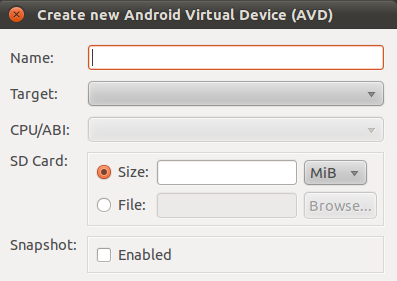
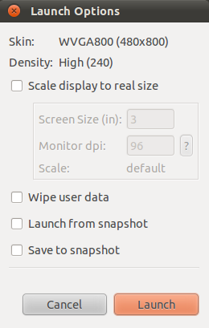

|
|
不知道為什麼，官方文件裡顯少提到 Snapshot 的用法，甚至在 Android Emulator 裡也完全把 Snapshot 相關的參數給略過了… 是因為 Emulator 速度一直都不理想嗎？但陸續有加速 Emulator 的方法… |
在 AVD Manager 建立或啟動 AVD 時，可以看到跟 Snapshot 相關的選項：
 |
 |
當然 Snapshot 必須要先啟用（事後可以修改），啟動時跟 Snapshot 相關的選項才能使用：
-
Launch from snapshot - 直接回到上次儲存的 snapshot。
-
Save to snapshot - 關閉 emulator 時要不要存回 snapshot。
|
|
從 AVD Manager 裡關於 Snapshot 相關的設定看起來，Emulator 同時間似乎只支援一個 snapshot？但事實上 Emulator 內建支援多個 snapshots，只是在 AVD Manger 的操作介面沒有反應出來而已。 |
是否啟用 Snapshot 的功能是記錄在config.ini 裡的 snapshot.present，至於上面兩個啟動時才給的設定，並沒有記錄在組態檔裡。
~/.android/avd/<avd_name>.avd/config.inihw.lcd.density=240
sdcard.size=100M
skin.name=WVGA800
skin.path=platforms/android-8/skins/WVGA800
hw.cpu.arch=arm
abi.type=armeabi
vm.heapSize=24
snapshot.present=true  image.sysdir.1=platforms/android-8/images/
image.sysdir.1=platforms/android-8/images/| 注意 present 跟該 AVD 目前有沒有任何 snapshot 無關，不要誤會了。 |
|
|
透過 Snapshot 固然可以大幅縮短 AVD 的啟動時間，但這還是沒有改善 emulator 操作起來比較慢的問題。 |
Snapshot 實際上是存放在 ~/.android/avd/<avd_name>.avd/snapshots.img。以下拿一個全新的 AVD MyPhone 來觀察 snapshots.img 的變化：
$ cd ~/.android/avd/MyPhone.avd
$ ls -1sh
total 105M
4.0K config.ini
101M sdcard.img
256K snapshots.img
3.9M userdata.img
$
$ ls -1sh
total 141M
12K cache.img
4.0K cache.img.lock
4.0K config.ini
4.0K hardware-qemu.ini
4.0K hardware-qemu.ini.lock
101M sdcard.img
4.0K sdcard.img.lock
256K snapshots.img  4.0K snapshots.img.lock
3.9M userdata.img
37M userdata-qemu.img
4.0K userdata-qemu.img.lock
$
$ touch /tmp/foo.txt
4.0K snapshots.img.lock
3.9M userdata.img
37M userdata-qemu.img
4.0K userdata-qemu.img.lock
$
$ touch /tmp/foo.txt  $ adb push /tmp/foo.txt /mnt/sdcard
$ adb shell ls /mnt/sdcard
LOST.DIR
foo.txt
$
$ ls -1sh snapshots.img
222M snapshots.img
$
$ adb shell ls /mnt/sdcard
$ adb push /tmp/foo.txt /mnt/sdcard
$ adb shell ls /mnt/sdcard
LOST.DIR
foo.txt
$
$ ls -1sh snapshots.img
222M snapshots.img
$
$ adb shell ls /mnt/sdcard  LOST.DIR
foo.txt
$
$ touch /tmp/bar.txt
LOST.DIR
foo.txt
$
$ touch /tmp/bar.txt  $ adb push /tmp/bar.txt /mnt/sdcard
$ adb shell ls /mnt/sdcard
LOST.DIR
foo.txt
bar.txt
$
$ adb shell ls /mnt/sdcard
LOST.DIR
foo.txt
$ adb push /tmp/bar.txt /mnt/sdcard
$ adb shell ls /mnt/sdcard
LOST.DIR
foo.txt
bar.txt
$
$ adb shell ls /mnt/sdcard
LOST.DIR
foo.txt
一開始 snapshots.img 只有 256K。
| |
AVD 啟動後多了很多檔案（有勾選 "Save to snapshot"），但 snapshots.img 的大小並沒有改變。
| |
送一支 foo.txt 到 SD card 後關掉 emulator，狀態寫回 snapshot，所以 snapshots.img 明顯地變大。
| |
| 重新啟動 AVD（只勾選 "Launch from snapshot" 但不勾選 "Save to snapshot"），果然 SD card 裡的檔案還在。 | |
再送一支 bar.txt 到 SD card 後重新啟動。由於狀態沒有寫回 snapshot，所以新加的 bar.txt 不見了，但 foo.txt 還在。
|
結果證明，SD card 的內容也在 Snapshot 的範圍內。
emulator CLI
透過 emulator 來啟動 AVD 時，當然也可以對 Snapshot 做相同的控制（甚至更多）。
如果 AVD 本身的 Snapshot 的功能有啟用，emulator 預設會從 snapshot 載入，關閉時也會寫回 snapshot。等同於從 AVD Manager 啟動時套用下面的設定：
可以加上 -no-snapshot-load 或 -no-snapshot-save 個別將 "Launch from snapshot" 或 "Save to snapshot" 前面的勾勾拿掉。
參考資料
-
Android Emulator | Android Developers - 完全沒提到 snapshot，甚至連 command line 參數都沒列出來。
-
Using the Android Emulator | Android Developers - 只有一行文字提到啟用 graphics acceleration 時，不能開啟 snapshot 的功能。
-
Optimizing Apps for Android 3.0 | Android Developers - 這份文件已被標示為 deprecated，但有一小節在討論 About emulator performance。